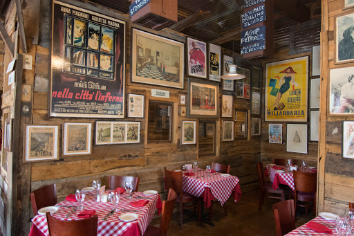

Ababa was established in 1977 in Jakarta, Indonesia.
We started as a small restaurant near Universities to serve
delicious steaks to universities students with fair price.
Fortunately, through every year, our customers are increasing
not just from universities students, but to businessman/woman as well.
As our reputation gets higher, we decided to upgrade our restaurant into a bigger one.
We upgraded into a luxury restaurant with many steak menus ready to be served for you.


Our special menu is Japanese Wagyu Steak.
It is our first steak to use imported high quality Wagyu meat from Japan.
We cook it to the point to ensure that you could taste to the very last bits of the meat.